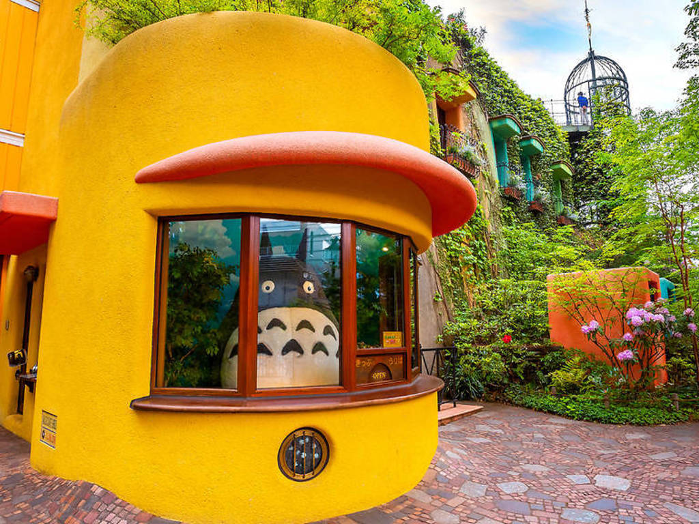
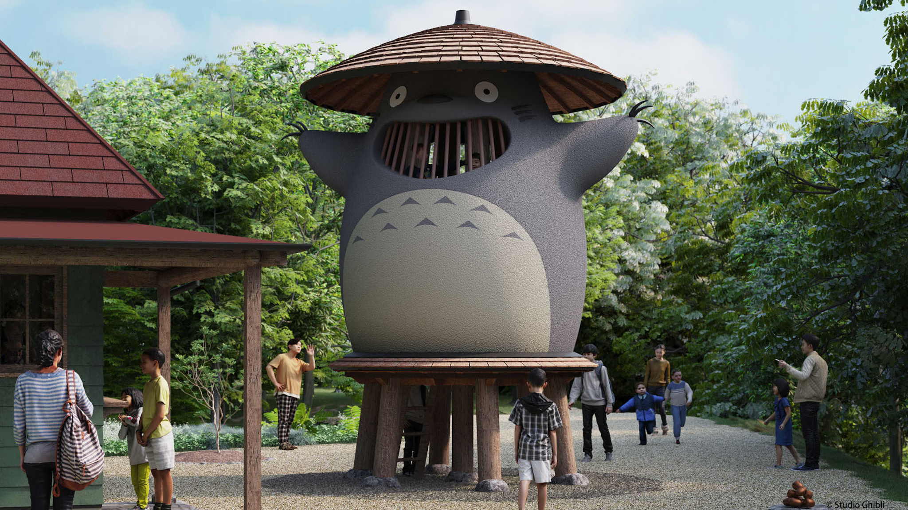
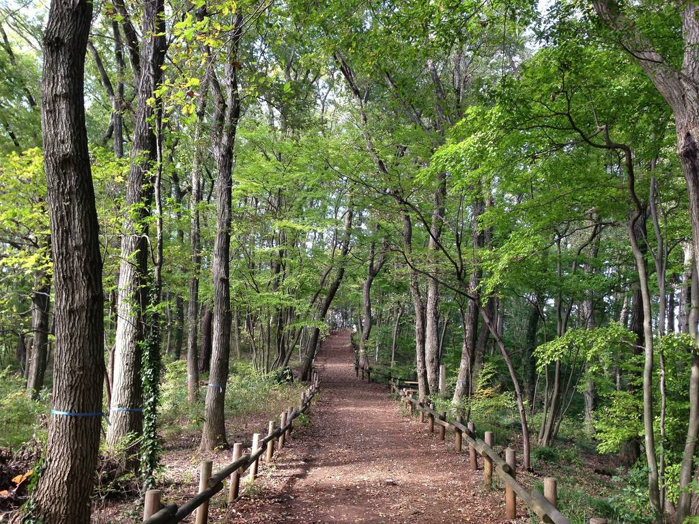
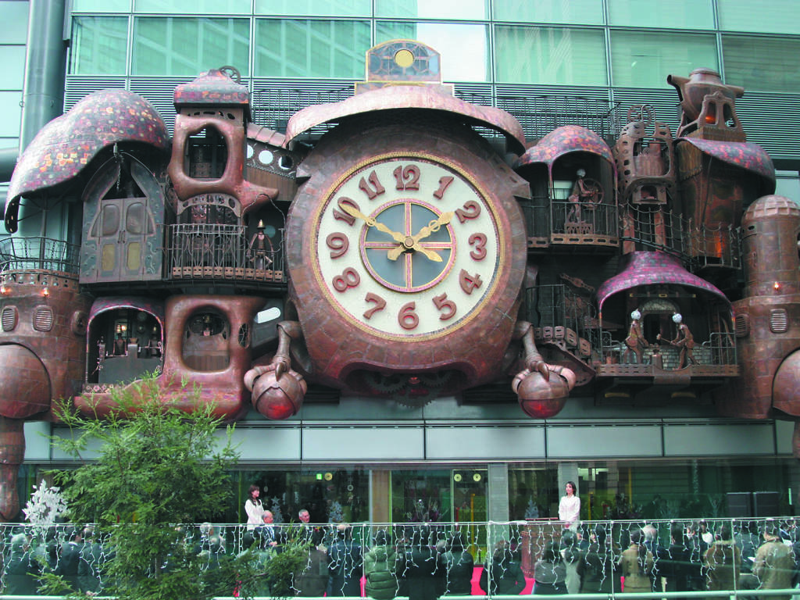
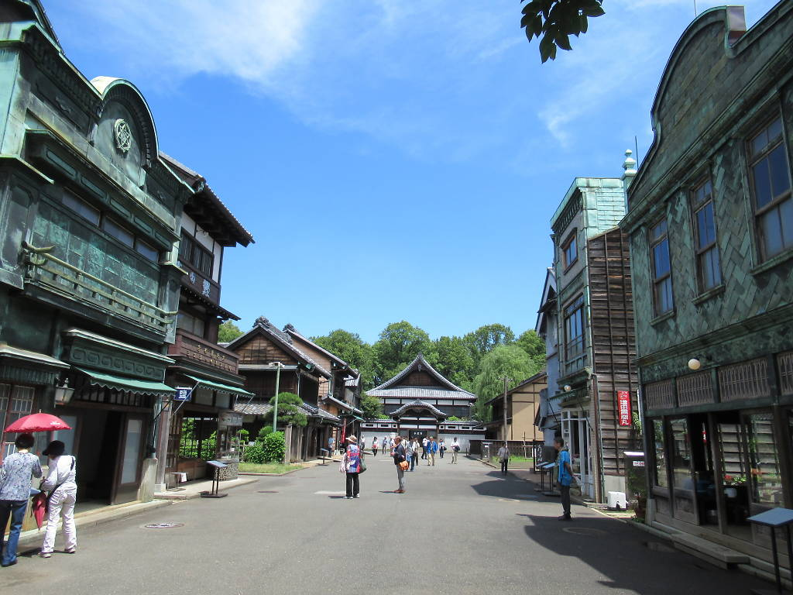
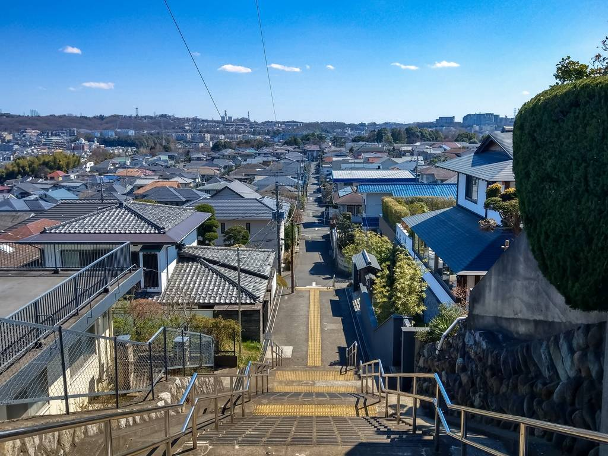

If you're already a fan of Studio Ghibli and are interesting in visiting any attractions relating to Studio Ghibli. Then you should consider putting one of these in your itinerary on your next visit to Japan.
Ghibli Museum
Essential for any Ghibli lover, this museum in Mitaka is like stepping into a Ghibli movie. No photos are allowed inside, so you enter the museum unmediated and it feels like you've stepped into a Ghibli fantasy world.
Filled with steampunk elements, hand-painted illustrations and original stained glass, the museum showcases seasonal exhibitions you might catch a showcase on the delicious meals featured in the movies or see original production sketches. The permanent exhibition explains how a movie is made, and each room has little Ghibli Easter eggs hidden throughout.


Ghibli Park
Ghibli Park is a park that represents the world of Studio Ghibli.
With close consultation with the surrounding forest,
it is being built on and within the grounds of Expo 2005 Aichi Commemorative Park (Moricoro Park).
There are no big attractions or rides in Ghibli Park.
Take a stroll, feel the wind, and discover the wonders.
The first phase of construction includes "Ghibli's Grand Warehouse," "Hill of Youth," and "Dondoko Forest."
Sayama Hills
The rolling inaka (countryside) of Saitama is the real-life home of Mei, Satsuki and, of course, Totoro. Director Hayao Miyazaki visited Sayama Hills also called Totoro no Mori for inspiration for the country setting of 'My Neighbor Totoro', where Mei and Satsuki spend long afternoons running through nature and befriending spirits.
Pack a bento and explore one of the 19 hiking trails in the 3,500-hectare forest. Pick up trail maps, discover native plant life and learn about the forest's influence on the movie at Kurosuke's House


Ni-Tele Really Big Clock
Designed by Hayao Miyazaki and the Ghibli team, this giant clock outside Shiodome's Ni-Tele Tower is a spot of whimsy in the bustling business district. This steampunk clock looks like it grew two legs and walked right out of 'Howl's Moving Castle'. Much like in a Ghibli film, the clock comes to life at 12noon, 3pm, 6pm and 8pm (with an additional 10am show on weekends and public holidays) and puts on a performance of music and dancing clock creatures.
Edo-Tokyo Open-Air Architectural Museum
This outdoor museum in Koganei has preserved structures and trains from bygone eras, with most of the buildings dating from the Meiji period (1868-1912), when Japan first began Westernising. While so many of Japan's historical buildings have been destroyed in war or natural disasters, this museum preserves the structures in all their glory. Spend the day wandering in and out of old buildings, including the Kodakara-yu sento bathhouse.
The museum feels like a town devoid of any residents, much like the creepy town Chihiro stumbles upon in 'Spirited Away'. In fact, it's believed Hayao Miyazaki visited the museum to reference landscapes used in the film.


Seiseki Sakuragaoka
'Whisper of the Heart', a lighthearted film starring Shizuku, an aspiring young writer, takes place in the Tokyo suburb of Seiseki Sakuragaoka, about 30 minutes from Shinjuku on the Keio line. The hilly landscape will be familiar to any fan; you'll recognise the suburb that bores Shizuku, until she finds its hidden secrets, which include a mysterious antique shop and a violin-crafting boy. Get there at sunset to climb Mimioka, or Whisper Hill, the same location of the final climactic scene.
Donguri Republic
Missed out on the Ghibli Museum? Don't worry, you can stock up on merch at Donguri Republic, a chain dedicated to Studio Ghibli. Only found in Japan, these stores have everything a Ghibli lover could dream of: stuffed toys, figurines, household and kitchen goods, planters, anything. Donguri Republic has outlets throughout the country, with Tokyo locations in Ikebukuro Sunshine City, Character Street in Tokyo Station, DiverCity Tokyo Plaza, Tokyo Skytree and Lala Port Tachikawa shopping mall.